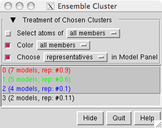

Ensemble Cluster clusters members of a conformational ensemble (where each member contains the same atoms) and determines cluster representatives. It is a reimplementation of the method described in:
An automated approach for clustering an ensemble of NMR-derived protein structures into conformationally related subfamilies. Kelley LA, Gardner SP, Sutcliffe MJ. Protein Eng. 1996 Nov;9(11):1063-5.See also: Ensemble Match, MD Movie
First, the ensemble of interest should be opened in Chimera from a single PDB file in which MODEL and ENDMDL records delimit the different structures (for example, 1plx).
There are several ways to start Ensemble Cluster, a tool in the Structure Comparison and MD/Ensemble Analysis categories. When it is started, a list of the open models will appear. The model containing the ensemble should be designated as the Ensemble to Cluster. Which atoms to consider (Parts to Match) can be indicated with a command-line-style atom specification, or the field can be left blank to include all atoms.
OK dismisses the model list and starts the clustering calculation, while Apply starts the calculation without dismissing the list.
|  |
The calculation may take several minutes, depending on the size and number of structures in the ensemble. Pairwise best-fit RMSD values are computed (without moving the structures) and written to the Reply Log. When the calculation finishes, a dialog will appear listing the clusters, their sizes, and the model IDs of their conformational representatives.
In the list, one or more clusters can be chosen with the left mouse button. Chosen lines are highlighted in the dialog. Ctrl-click toggles the status of a line, while clicking on the first (or last) line of a contiguous block and then Shift-clicking on the last (or first) chooses all of the lines in the block.
Clicking the black arrowhead reveals/hides options for the Treatment of Chosen Clusters. Each option applies to a target of either all members or just the representatives of the chosen clusters:
If the cluster list is hidden (by clicking the Hide button) or becomes obscured by other windows, it can be resurrected using the Raise option for its instance in the Tools menu. Quit closes the table and exits from Ensemble Cluster. Help opens this manual page in a browser window.